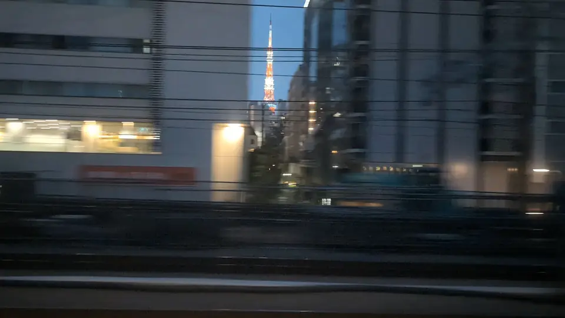
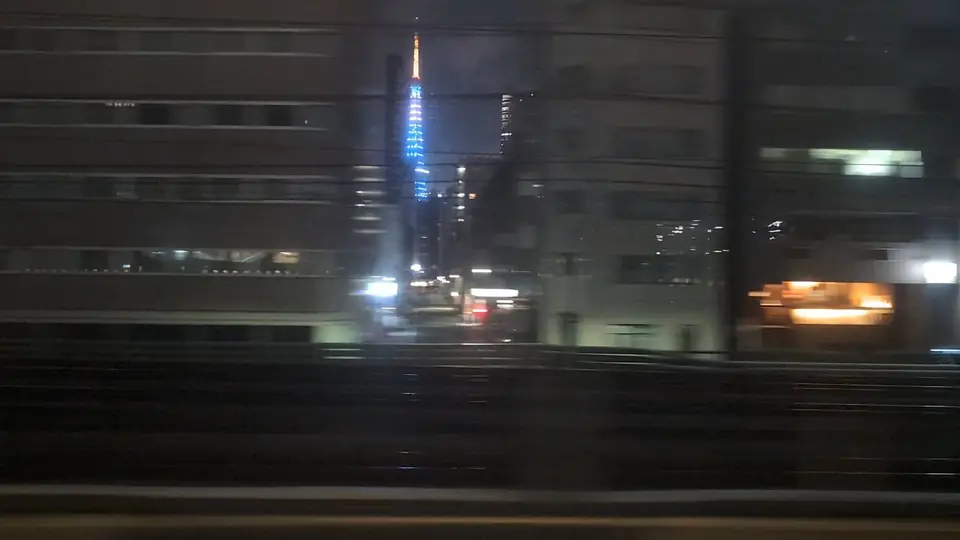

- Section
- Tokyo → Shinagawa
- Seat side
- Seat E · mountain side
- Timing
- About 3 minutes after leaving Tokyo on a Nozomi train
- Photos
- 4 photos
What do you see just after leaving Tokyo Station?
Right after leaving Tokyo Station on the Tokaido Shinkansen, the window fills with the glass towers of Yurakucho and Shimbashi, the high-rise offices of Shiodome, and the green of Shiba Park. In a gap between buildings on the Seat E side, the red-and-white Tokyo Tower rises vertically for just a few seconds. As the train nears Shinagawa the view returns to high-rises, and around Oimachi you glimpse the backside of the train depots and the Keihin industrial area. Catching Tokyo Tower is really about noticing how quickly the ride crosses central Tokyo.
More: Tokyo Tower official siteTokyo Tower: Illumination information@letus10: Tokyo Tower window article (Japanese only)
If you are traveling from Tokyo toward Shin-Osaka, start watching the Seat E · mountain side window as you approach Tokyo → Shinagawa. If you are traveling toward Tokyo, the order is reversed.
Where is Tokyo Tower, and what surrounds it?
Tokyo Tower is a 333-meter broadcasting tower in Shiba Park, Minato-ku, completed in 1958. When it opened it was the world's tallest self-supporting steel tower, and it is still the only red tower rising above central Tokyo. From the Shinkansen you see it on the east side (Seat E), always as a brief flash between buildings.
The surroundings matter too. Shiodome's high-rises, the sweeping roof of Zojo-ji Temple, the distant silhouettes of Roppongi Hills and Toranomon Hills, and the redevelopment towers around Shinagawa all pass in sequence. Tokyo Tower is both the landmark itself and a compass mark that tells you which part of central Tokyo the train is crossing at that moment.
At night the tower's design comes forward. Its baseline 'Landmark Light' switches between a cool summer white and a warm winter glow, while the seasonal 'Diamond Veil' illumination adds pinks, blues, or rainbow colors for events and anniversaries. The official illumination schedule is linked below the map.
Location at a glance
Open mapSwitch between the spot and the Shinkansen viewpoint.
How to catch Tokyo Tower
1. Choose the window first
As you approach Tokyo → Shinagawa, start watching from Seat E · mountain side. Use Live Guide while riding, or the map on this page before you board.
The clearest view lasts only a few seconds. Decide the seat side and window direction before it arrives rather than reaching for your camera late.
2. Highlights
As soon as the train leaves Tokyo Station, look toward the Seat E window early. A red vertical silhouette flashes through the gaps between the Shiodome and Hamamatsucho towers. Even if you miss the tower itself, the Shinagawa high-rise cluster and the green of Shiba Park make it clear you are crossing central Tokyo. At night, the illuminated tower stands out especially well.
Tokyo Tower in photos


 Related
Mt. Fuji
Related
Mt. Fuji
 Related
Lake Hamana
Related
Lake Hamana
 Related
Mt. Ibuki
Related
Mt. Ibuki